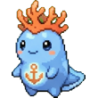

 WaterRock
WaterRockTap a stage to read its story.
Corayu is a small blue sea-sprite with a round body, two wide eyes, and a bundle of bright orange coral-tendrils sprouting from its head like a cheerful crown. A simple anchor emblem is painted or grown on its round belly. In Amber Desert it is a curiosity - a water-creature thriving in the driest region - but it survives by finding the deep underground aquifers below the dunes and surfacing at dusk to bounce on the warm sand. It hums constantly while bouncing, marking each bounce with a different note.
Field note: Corayu marks each bounce with a different note - researchers have recorded 140 distinct notes from one dusk session.
Amber Desert. Corayu and its family are found in the Amber Desert. See everyone who lives there.
Share a Bond Food that matches its types to become friends. Corayu loves:
A Bond Food is not a trick. It joins your spirit with the Kimuro's spirit, and only when it chooses you.
Print the Kimuro adventure packs: mazes, cards, a board game and Bond Mark medals.
See the printable packs